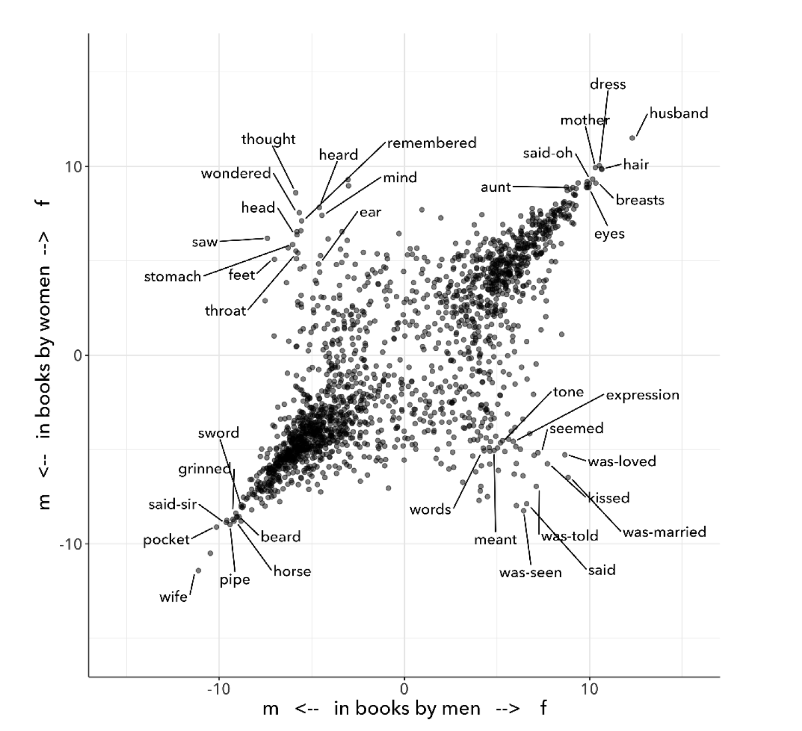
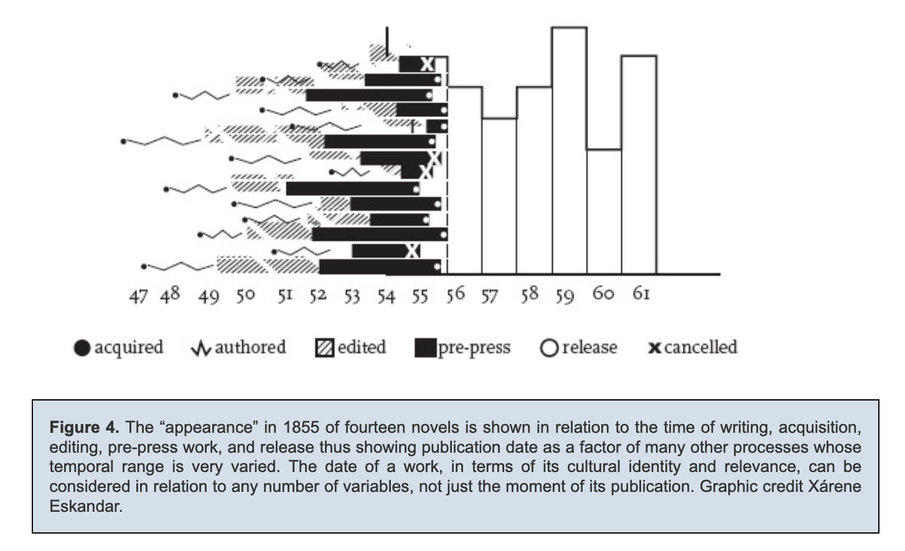

Table of Contents
- 1. one
- 1.1. revision notes
- 1.2. on reading methodology, orientations toward reading
- 1.3. on reproducible criticism
- 1.4. textual scholarship and deformance
- 1.5. queer performance & citationality
- 1.6. TODO Queer Distant Reading
- 1.6.1. reading methods, revisited
- 1.6.2. TODO bringing in Woolf
- 1.6.3. TODO Performance (performative citation) as a way of enacting
- 1.6.4. TODO But at the same time, we can iterate over that code, to produce
- 1.6.5. TODO We are taking what has been reduced, reworking it into new
- 1.6.6. TODO Performatiave citation as queering distant reading: Deception
- 1.6.7. TODO The process reveals the hidden "enabling structures" of our
- 1.6.8. Klein's Image of Absence, Caughie's Storm Cloud
- 1.6.9. gio on voyant / nltk
- 1.6.10. so this has been done before
- 2. more sources
- 3. Move to other chapters
- 4. commands
- 5. annotated bib
-
- 5.0.1. Moretti, Franco. Graphs, Maps, Trees: Abstract Models for Literary
- 5.0.2. Drucker, Johanna. "Introduction," SpecLab: Digital Aesthetics and
- 5.0.3. Ramsay, Stephen. Reading Machines: Toward an Algorithmic
- 5.0.4. Drucker, Johanna. "Humanities Approaches to Graphical Display." DHQ:
- 5.0.5. Felski, Rita. The Limits of Critique. 2015.
- 5.0.6. Piper, Andrew. Enumerations: Data and Literary Study. 2018.
- 5.0.7. Landow, George. Hypertext 3.0: Critical Theory and New Media in an Era
- 5.0.8. Fisher, Caitlin. These Waves of Girls, 2001. Web.
- 5.0.9. Tenen, Dennis. Plain Text: the Poetics of Computation, 2017. Epub.
- 5.0.10. Rockwell, Geoffrey and Stefan Sinclair. Voyant-Tools. 2018.
- 5.0.11. Galloway, Alexander. Protocol: How Control Exists after
- 5.0.12. Chun, Wendy. Control and Freedom: Power and Paranoia in the Age of
- 5.0.13. Bennett, Jane. Vibrant Matter: A Political Ecology of Things. 2010.
- 5.0.14. Moten, Fred and Stefano Harney. The Undercommons: Fugitive Planning &
- 5.0.15. Tufekci, Zeynep. Twitter and Tear Gas: the Power and Fragility of
- 5.0.16. Gaboury, Jacob. "Becoming NULL: Queer Relations in the Excluded
- 5.0.17. Kittler, Friedrich. Gramophone, Film, Typewriter. 1999.
- 5.0.18. Hayles, N. Katherine. Writing Machines. 2002.
- 5.0.19. Kirschenbaum, Matthew. Mechanisms: New Media and the Forensic
- 5.0.20. Blanchette, Jean-François, "A Material History of Bits." Journal of
- 5.0.21. Hansen, Mark. Feed-Forward: On The Future of 21st Century Media. 2014.
- 5.0.22. Woolf, Virginia, Emily McGinn, Amy Leggette, Matthew Hannah, and Paul
- 5.0.23. Peters, John Durham. The Marvelous Clouds: Toward a Philosophy of
- 5.0.24. McKenzie, D.F. Bibliography and the Sociology of Texts. 1986.
- 5.0.25. Tanselle, Thomas. "A Rationale of Textual Criticism." 1992.
- 5.0.26. Derrida, Jacques. “Archive Fever: A Freudian Impression.”
- 5.0.27. McGann, Jerome. Radiant Textuality: Literature after the World Wide
- 5.0.28. Singer, Kate. “Digital Close Reading: TEI for Teaching Poetic
- 5.0.29. Caughie, Emily Datskou and Rebecca Parker. “Storm Clouds on the
-
1 one
1.1 revision notes
1.1.1 chapter summary
The burden of the chapter is to describe how to do text analysis in a way that attends to queer concepts of performativity, and how that method enhances the critical process. It begins by debunking the fantasy of falsifiable criticism, presenting a critique of moretti's methodology and stylistic approach (eventually with accompanying text analysis). It then goes into a critique of current distant reading practices, discussing Ted Underwood, Nan Z. Da, to emphasize how these practices can often reproduce the critic's assumptions. This section also discusses the work of Johanna Drucker and Richard Jean So, emphasizing that their methods do a good job deconstructing social categories. While this deconstruction is important, I'm interested in analysis of text that disrupts what we know about these literary materials by producing new structures, or formalizations of these texts. Then, I go into a history of textual scholarship, focusing particularly on the work of Jerome McGann, Tanya Clement, and Katherine Bode, who offer a deformative and speculative understanding of critical analysis that is useful for my proposal. Then, I dip into Queer Theory, in particular Judith Butler's concepts of performativity and citation, which lend an understanding to the ways that critical processes can subvert dominant structures through iteration, or "performative citation." This notion of displacement through repetition is applied back to text analysis to illustrate how the iterative process of analyzing text can surface new textual structures that re-signify certain elements of that text. The chapter ends with my reading of Virginia Woolf's Orlando, to show how our understanding of "man" and "woman" in that text is re-signified through this kind of text analysis.
1.1.2 what is the main point of this chapter?
The burden of the chapter is to describe how to do text analysis in a way that attends to queer concepts of performativity.
This notion of displacement through repetition is applied back to text analysis to illustrate how the iterative process of analyzing text can surface new textual structures that re-signify certain elements of that text.
1.1.3 revision feedback from diss
Underwood & Da
- While before the emphasis was on data organization, now it is on the choice/selection of data. This is okay, but the differences between the two need to be acknowledged.
- Thread the notion on collapsing assumptions about gender throughout the entire section, not just the Underwood critique. This needs to come to the fore of the argument.
- Consolidate the quality that I'm trying to emphasize with my Underwood critique: is it standardization, ease of use, simplicity, or reproducibility??
- Address how Da's misunderstanding of Topic Modelling has been answered by Ben Schmidt in Critical Inquiry—not that this matters, because it nonetheless reveals a perspective on critical methods which values the reproducible.
- Explain better reproducibility.
1.2 on reading methodology, orientations toward reading
our orientation toward reading determines the intervention — we need an orientation that will allow queer elements to surface.
1.2.1 paranoid reading/symptomatic reading/militant reading
–> Suspicious reading evacuates criticism into a reproducible (and repetitive) formula.
There are several styles of literary analysis, which determine the trajectory of readerly engagement with texts. Taking the name of "paranoid reading," "militant reading," and "sympotmatic reading," is a reading pratice that places the importance of meaning in what a text does not say, what it cannot say.1 Originally popularized by Karl Marx, Sigmund Freud, and Friedrich Nietzsche, this reading practice descends from a style of critique driven by an almost paranoid belief that power structures (the economy, the unconscious, and moral systems, respectively) encode a certain ideology which will finally be demystified by critical analysis and exposure. In literary criticism, this kind of reading takes many names. Eve Kofosky Sedgwick describes it as "paranoid reading"--paranoid because it searches for hidden elements of text that play into a larger narrative about resistance against a system of oppression. For Sedgwick, this kind of reading places its faith in the "drama of exposure," which will once and for all, finally reveal the truth. Similar to paranoid reading, Stephen Best and Sharon Marcus define "symptomatic reading" as an interpretive practice that locates latent patterns or “absences, gaps, and ellipses in texts,” then speculates upon “what those absences mean, what forces create them, and how they signify the questions that motivate the text” (3). Often, this kind of reading is driven by the conviction that criticism aims to register correct descriptions of a text’s meaning or its relationship to reality.
In itself, this kind of reading practice can be an exhilarating and rewarding exercise for literary criticism. But, as the above critics argue, it can also evacuate some of the more [pleasurable and productive] qualities of literary analysis. First, it discourages attention from the aesthetic qualities of the text and instead directs it to what is hidden or absent. Forsaking the surface level of the text, this approach instead adopts an attitude of suspicion about what is below the surface, or what is not there at all. Rita Felski describes this orientation as "militant" because it grows from an affect of disenchantment between between reader and text, where the reader enlists "to expose hidden truths and draw out unflattering and counterintuitive meanings that others fail to see" (1). Second, in this process, textual elements are conscripted into supporting what Sedgwick calls "a binary mode of thinking"–searching beneath, behind, or beyond the text, instead of considering how phenomenon might exist on the surface (8). This process creates a formula for literary analysis, turning reading into a mechanical practice of searching for what is hidden or absent which will finally explain some latent meaning in the text. Sedgwick explains that this reading process imposes an "unhelpful structure" for analysis, where the complex substance of textuality is conscripted into the interplay between "repression and liberation" (12). Finally, such a process induces its own replication. Because paranoia seeks its own affirmation, and its nature is to spread. it reflects and confirms its own desire on every surface. This process is replicated as the search for meaning takes on other texts, imposing the same structure on new material. This contagiousness, each time, will surface something new, but never entirely novel. Sedgwick "see[s] a cognitive danger in these interpretations: a moralisitic tautology that became increasingly incabable of recognizing itself as such" (12). In short, paranoid reading encourages a kind of criticism that is reproducible.
1.2.2 Computation enhances suspicion
–> Computational methods give the critic more absence to mine in the form of "big data." Distant reading by Moretti ramps up the apparent "automation" in analysis toward furthering criticism.
This kind of reading is particularly suceptible to digital methods for literary criticism. Sometimes, in digital methods like quantitative text analysis, or the computational processing of textual elements, features, and style, the problem of absence is replaced with the problem of scale. Because computers can process hundreds of texts at a time, they offer critics the possibility of getting around the problem of literary scale. Additionally, the supposed "objectivity" of computer processing emboldens some critics in the kind of claims they make about literary history. For some, the capacity of the computer to process vast amounts of text enables them to pose and answer ambitious questions about literary history. Franco Moretti's work, for example, examines the impact of social and economic forces upon literary form to pose broad questions about how these forms developed in the modern age of the novel. In his collection, Distant Reading, Moretti declares that "distance… is a condition of knowledge," where it works to abstract information that would otherwise be too large to consider (48). Ted Underwood, who works in the field of Computational Literary Studies (CLS), harnesses the power of quantification and machine learning to glimpse what he calls the "distant horizon" of literary trends across centuries2. More often than not, this kind of distant reading is combined with close reading methods, as critics will use the results of quantitative analysis to identify key moments from the text that merit closer attention.3
Underlying Moretti’s work is a deep concern with finding a method that may connect historical forces with literary form. Pior to the development of distant reading, Moretti called for a “falsifiable criticism” to help ascertain the link between formalism and history. Moretti objects to the analytical practice of contemporary literary critics that "revolve[s] around concepts such as ‘ambiguity’ and the like" (Signs Taken for Wonders 22). According to Moretti, "criticism will always, inexorably, be pushed into multiplying, rather than reducing, the obstacles every social science encounters when it tries to give itself a testable foundation" (22). He then explains his criteria for a "falsifiable criticism," which borrows from social scientific methodology:
In principle, the criteria for testing literary interpretations should be the same as those already in use in every other scientific discipline. One should in other words demand of an interpretation that is coherent, univocal, and complete. And the test will consist in comparing it with data which—-in the text or texts that constitute its object—-appear contradictory or inexplicable in the light of the hypothesis itself. Signs Taken for Wonders 21
Here, Moretti proposes a mode of critical inquiry that minimizes the potential for difference and disagreement by laying an empirical method that facilitates "coherent, univocal, and complete" interpretations. Moretti's early reflections reveal a concern with the "falsifiable" that drives his development toward "quantitative formalism."
Moretti's distant reading conscripts digital methods toward the kind of truth searching of paranoid reading. In his later work, Moretti quantifies literary history and textual data through a series of visualizations, such as graphs and diagrams. His approach attributes the bulk analysis in computational processes, and the literary critic's role to interpret the results of analysis. The essays in Distant Reading increasingly demonstrate how his critical method is streamlines into the neat, recursive processes of hypothesis, collecting and assembling data, and inference. The results are sometimes unexpected, but thoroughly enlightening, and occasionally bring Moretti to reframe his hypotheses. In “Style, Inc.: Reflections on 7,000 Titles (British Novels, 1740-1850),” Moretti plots data about book titles on a series of graphs in order to speculate on market forces–"the title is where the novel as language meets the novel as commodity" (181). Moretti summarizes his conclusion: "As the market expands, titles contract; as they do that, they learn to compress meaning; and as they do that, they develop special ‘signals’ to place books in the right market niche” (204). His language attributes the force of his analysis to the quantitative process:
In what follows, I focus on three moments of this history: first, I describe a major metamorphosis of eighteenth-century titles, and try to explain its causes; next, I suggest how a new type of title that emerged around 1800 may have changed what readers expected of novels; and finally, I make a little attempt at quantitative stylistics, examining some strategies by which titles point to specific genres. Three sections, three pieces in the large puzzle of the literary field. (181-2; emphasis mine)
Though his speculations are provocative, Moretti presents them as supplementary to the graphs. Moretti’s diminishing language–he describe[s], tr[ies] to explain, suggest[s] and make[s] a little attempt–belies the nature of his intervention. After all, it is Moretti who poses the question, inputs the data, and interprets the graphs with his conclusion: “between the size of the market, and the length of the titles, a strong negative correlation emerged: as the one expanded, the other contracted” (188). The power of the computer emboldens Moretti to make larger claims about literary history, all the while diminishing his role as in analysis.
1.2.3 Ramsay's speculative text analysis
–> Ramsay shows us how computational processes can aid in critical reflection to go beyond paranoid reading into a more speculative, albeit inconclusive, method.
There are literary critics who, eschewing the temptation of the paranoia, employ the "distance" of distant reading toward more speculative and creative ends. Stephen Ramsay, for example, approaches "the rigid, inexorable, uncompromising logic of algorithmic transformations" as an opportunity for contemplative analysis (32). Rather than solve problems or answer questions definitively, he engages in readings that are inescapably partial and speculative. Ramsay explains that computational methods enhance current reading strategies by harnessing the constraints of computation so that new readings may flourish: “The computer revolutionizes, not because it proposes an alternative to the basic hermeneutical procedure, but because it reimagines that procedure at new scales, with new speeds, and among new sets of conditions” (31). Activities such as compiling word frequency lists, diagramming social relationships, or plotting various textual data not only transform texts into new forms from which the critic may speculate, but are grounded in inherently critical moves, such as asking questions or identifying problems. Ramsay maintains that all critical reading is a deformative activity insofar as it prioritizes certain textual data such as formal patterns, words, devices over others and delivers a new "paratext." For example, in his analysis of Virginia Woolf’s novel The Waves, Ramsay uses a computer program to generate lists of distinctive terms uttered by each of the six speakers in the novel. Ramsay emphasizes how this method “puts forth not the [original] text, but a new text in which the data has been paraphrased, elaborated, selected, truncated, and transduced” (16). To say, as a result, that the word frequencies "confirm" or "verify" what other critics have argued about the characters assumes that literary criticism aims for singular answers. Rather, the point of such an exercise is to “unleash the potentialities” of the text, offering opportunities for new readings (33). Ramsay point out that “we are not trying to solve Woolf. We are trying to ensure that discussion of The Waves continues” (15). Here, the goal is a rhetorical exercise:
The understanding promised us by the critical act arises not from a presentation of facts, but from the elaboration of a gestalt, and it rightfully includes the vague reference, the conjectured similitude, the ironic twist, and the dramatic turn. In the spirit of inventio, the critic freely employs the rhetorical acts of conjecture—not so that a given matter can be settled, but in order that the matter might become richer, deeper, and ever more complicated. 16
Ramsay's method uses speed and efficiency of the machine to reflect back upon the critic, to give the critic more material and more opportunity for the creativity and speculation that characterizes literary analysis.
1.2.4 Moretti and ramsay doing similar toward different ends
There is significant overlap distant reading and algorithmic criticism in that they visualize or arrange textual data to stimulate analysis. Moretti, if you follow his thought, is actually engaging in a speculative method, using visualization to spark his imagination and make conjectures, which he disguises them “explanations”. He is transforming texts into new configurations (such as diagrams or word frequency lists) that stimulate potential readings. However, because Moretti and Ramsay are trying to answer quite different questions, their analysis takes them in different directions. In the pursuit of the falsifiable, Moretti evacuates much of his method's creative potential. The difference between them has largely to do not with method, but with orientation. Moretti's suspicion stems from the conviction that the archive of literary history has something to hide. Rita Felski explains that something that many of these critics do not address—the role of affect in criticism. Her critique of “hermeneutics of suspicion,” which she calls a militant mode of reading, finds that the desire to unearth or discover secrets in the text is actually a harmful one, because it forecloses possibilities of connection and being moved by these texts. The affective modes of suspicion include disenchantment, vigilance, paranoia. Felski wonders what if we allowed ourselves to be marked or struck by what we read. Then, rather than just be a cognitive activity, reading can become an “embodied mode of attentiveness that involves us in acts of sensing, perceiving, feeling, registering, and engaging” (176). She wants to bring the body back into criticism. Ramsay is not only willing to be surprised, he is driven by a desire for surprise.
1.2.5 using the digital to work with queerness
(using queerness to work with the digital)
Ramsay demonsrates how one might use text analysis to do this kind of speculative work that leads to novel results. But how do we do this in a way that engages gender and sexuality in textuality? Queerness, like other areas of marginalization, is often approached as hidden and obscured. Queer theorists approach text as holding its secret below the surface. To avoid this paranoid position, we might look to engage with queerness as an aestheticized quality, as something that operates on the surface of the text, without conscripting it into the logic of "prohibition or liberation," like Sedgwick says. We are looking at distant reading, not to compensate for speed or efficiency, but for the ways that it allows us to re-read the surface of our texts.
How can we read the queerness of texts not by what they hide, but what they show? This chapter proposes a method of reading that grapples with the tension to unearth hidden, latent, or absent meaning in text. It takes this tension to texts that have a history of embedding ideology about marginalized identities, particularly about sexuality. The stakes is preserving the role of the aesthetics in critique. How can the reconfiguration–the abstraction–provided by the machine allow us to engage with queerness in texts?
1.2.6 orlando close reading
Virginia Woolf's Orlando: A Biography is a fictional biography that follows the life of a 16th-century English nobleman, Orlando, as he undergoes a sex change and lives into the 20th century as a woman. As he recounts the life of Orlando, the biographer-narrator mocks the techniques of historical biographers by continualling calling into question the ability of language to adequately describe life.
From the beginning, the text displays the biographer's ambivalence about how to describe Orlando and presents two possible perspecties–that of the poet, and that of the biographer:
… Orlando's face, as he threw the window open, was lit solely by the sun itself. A more candid, sullen face it would be impossible to find. Happy the mother who bears, happier still the biographer who records the life of such a one! Never need she vex herself, nor he invoke the help of novelist or poet. From deed to deed, from glory to glory, from office to office he must go, his scribe following after, till they reach whatever seat it may be that is the height of their desire. Orlando, to look at, was cut out precisely for some such career. The red of the cheeks was covered with peach down; the down on the lips was only a little thicker than the down on the cheeks. The lips themselves were short and slightly drawn back over teeth of an exquisite and almond whiteness. Nothing disturbed the arrowy nose in its short, tense flight; the hair was dark, the ears small, and fitted closely to the head. But, alas, that these catalogues of youthful beauty cannot end without mentioning forehead and eyes. Alas, that people are seldom born devoid of all three; for directly we glance at Orlando standing by the window, we must admit that he had eyes like drenched violets, so large that the water seemed to have brimmed in them and widened them; and a brow like the swelling of a marble dome pressed between the two blank medallions which were his temples. Directly we glance at eyes and forehead, thus do we rhapsodize. Directly we glance at eyes and forehead, we have to admit a thousand disagreeables which it is the aim of every good biographer to ignore. 12-13
Here, the biographer declares Orlando’s beautiful face a good subject for biography. The biographer asserts his aims are to record Orlando, "following after" him, "from deed to deed, from glory to glory, from office to office" (12). The description of Orlando's face begins soberly enough with straightforward sentence structure using simple "to be" verbs that describe Orlando's features with some insertion of modest figurative comparisons (the "peach down" ob the lips, teeth of "an exquisite and almond whiteness," the "tense flight" of the "arrowy nose," etc). However, when the biographer arrives to Orlando's eyes and forehead, his style ascends into full-fledged figuration: he "must admit that [Orlando] had eyes like drenched violets, so large that the water seemed to have brimmed in them and widened them." The biographer's problem, that Orlando is too beautiful for literal description–“Directly we glance at the eyes and forehead, we have to admit a thousand disagreeables which it is the aim of every good biographer to ignore”–requires him to draw on the strategies of the poet, using imagery and simile.
For the biographer, the main challenge is to describe Orlando's life in a way that is objective and literal, in keeping with the principles of biography. However the biographer runs up against an issue with his work in a key moment of the text, when Orlando undergoes the change of sex from male to female. The record of Orlando’s life at this stage is incomplete: "It is, indeed, highly unfortunate, and much to be regretted that at this stage of Orlando's career… we have least information to go upon" (88). A fire breaks out, destroying part of the manuscript that the biographer uses as source material:
Often the paper was scorched a deep brown in the middle of the most important sentence. Just when we thought to elucidate a secret that has puzzled historians for a hundred years, there was a hole in the manuscript big enough to put your finger through. We have done our best to piece out a meagre summary from the charred fragments that remain; but often it has been necessary to speculate, to surmise, and even to use the imagination. 88
The biographer explains that he must work from fragments, and as a result, must draw from speculation.
Within the level of the story, Orlando undergoes a similar struggle with language's ability to convey objective truth. In developing his poetic sensibility, Orlando takes particular issue with the potential for language to signify real-world referents. He is attempting to describe the color of the grass and the sky, but remains discouraged by the efficacy of his language:
'The sky is blue,' he said, 'the grass is green.' Looking up, he saw that, on the contrary, the sky is like the veils which a thousand Madonnas have let fall from their hair; and the grass fleets and darkens like a flight of girls fleeing the embraces of hairy satyrs from enchanted woods. 'Upon my word,' he said (for he had fallen into the bad habit of speaking aloud), 'I don't see that one's more true than another. Both are utterly false.' And he despaired of being able to solve the problem of what poetry is and what truth is and fell into a deep dejection. 75
Orlando cannot comprehend whether plain english (“the sky is blue; the grass is green”) is preferable to figurative language (“she sky is like the veils which a thousand Madonnas have let fall from their hair; the grass fleets and darkens like a flight of girls fleeing the embraces of hairy satyrs from enchanted woods”). For Orlando, both seem false.
As Orlando undergoes a sex change and falls in love, his issues with language begin to resolve. In a scene that evokes the prior one on the grass, Orlando is in Hyde Park, watching a toy boat negotiate a wavelet on the Serpentine river. Momentarily, the boat is dissapears then re-emerges on the other side of the wavelet. Orlando associates this moment with the word “ecstasy”, and hurries to telegram the phrase, ‘a toy boat on the serpentine’ and ‘ecstasy’, to her lover, who she knows will immediately understand what it means. As she hurries to the post office, she meditates on the nature of language and literature, which she now realizes is violently ecstatic.
'A toy boat, a toy boat, a toy boat,' she repeated, thus enforcing upon herself the fact that it is not articles by Nick Greene on John Donne nor eight-hour bills nor covenants nor factory acts that matter; it's something useless, sudden, violent; something that costs a life; red, blue, purple; a spirit; a splash; like those hyacinths (she was passing a fine bed of them); free from taint, dependence, soilure of humanity or care for one's kind; something rash, ridiculous, like my hyacinth, husband I mean, Bonthrop: that's what it is–a toy boat on the Serpentine, ecstasy–it's ecstasy that matters.
Unlike the grass and sky from the previous scene, language now has the power to signify. "A toy boat" and "ecstasy" are reduced to the same meaning, a common denominator of feeling. This reduction elevates the potential for language to capture and convey meaning. The symmetry of these two episodes shows how Orlando moves beyond a disappointment in the limitations of language for expression to a new faith in its power to mean.
As Orlando resolves her struggle with language, so does the biographer. Increasingly, the biographer drops this pretension toward accuracy and boldly speculates, without excuses, elements of the story. At one point, the biographer draws the reader into this speculation. At this moment, Orlando mets her lover, Shel, a ship captain who exhibits as many feminine qualities as Orlando does masculine. The biographer describes a scene of their early courtship:
'Shel, my darling,' she began again, 'tell me…' and so they talked two hours or more, perhaps about Cape Horn, perhaps not, and really it would profit little to write down what they said, for they knew each other so well that they could say anything, which is tantamount to saying nothing, or saying such stupid, prosy things as how to cook an omelette, or where to buy the best boots in London, things which have no lustre taken from their setting, yet are positively of amazing beauty within it. For it has come about, by the wise economy of nature, that our modern spirit can almost dispense with language; the commonest expressions do, since no expressions do; hence the most ordinary conversation is often the most poetic, and the most poetic is precisely that which cannot be written down. For which reasons we leave a great blank here, which must be taken to indicate that the space is filled to repletion.
The biographer here explains that this conversation would come across as extremely ordinary and boring to the reader, although it was actually beautiful and poetic when it took place. An ordinary conversation can be poetic at the moment of expression, delivered or said in a way that is beautiful, which may then lose in language. The reader then encounters a space break which the biographer instructs her to imagine is "filled to repletion." This space break reinvokes the episode with the manuscript, where the biographer points out that there are holes or gaps in the record. However, while it was previously a problem with evidence, now it is a problem with language. According to the biographer, the means to express this conversation doesn’t exist in language. As a result, the biographer invites the reader to fill in the space. To use speculation and guesses as to what happened. The reader must do what the biographer did when he confronted the lack of evidence, which was to guess what happens from the available evidence.
Comparing the biographer and Orlando's experiences with language surface an interesting insight: imagination works to both reduce and elevate language. In one case, the word "ecstasy" is endowned with powerful meaning, or the ability to mean. In the other, words in fact lose their ability to convey, so the language of absence take their place. But the critical move amounts to the same. Both assert the reader's role in constructing meaning. Words have the power to signify, but not in themselves, inert and sterile on the page. They require the imagination from the reader.
In troubling the line between objective reality and subjective experience, Woolf’s parodic biography explores how language and gender are similarly (and coordinately) constructed. This development in language both within the story and on the level of narration is coordinated with Orlando's gender development. Orlando's struggle with the ability of words to mean and the biographer's struggle to tell a story of a life, begins to resolve after the gender change. The difficulty with language that Orlando and the biographer both experience becomes less and less of an issue as Orlando comes into her femininity, which is to say, becomes comfortable in herself. These changes are possible because the narrative embraces the influence of the imaginary in language, in minding meaning in words and in storytelling. This allows Orlando to accept the role of the imagination in gender, in making gender meaningful.
I will use text analysis to further explore the relationship between these themes: language, gender, and the imagination. So the question then becomes: how are language and gender co-constructed in Orlando? What is the role of the imagination in gender/language? What is the relation between gender, language, and the imagination?
1.3 on reproducible criticism
we need to look at how text analysis has addressed marginalized aspects, that which might be hidden, or on the surface.
1.3.1 Underwood et al
Major developments in technology also perpetuate racial assumptions. Moving from networking technologies to software development, Tara McPherson explores the parallels between the Operating Systems and race relations, to show how the development of computer software betrays hegemonic assumptions about whiteness and elisions of difference.4 She focuses on the key moment of 1960s United States, when Operating Systems, which is the foundational software that supports a computer's programs and basic functioning, developed alongside civil rights discourses. Her research focuses on how "the organization of information and capital" in OS development resonates in the struggles for racial justice: "Many of these shifts were enacted in the name of liberalism, aimed at distancing the overt racism of the past even as they contained and cordoned off progressive radicalism" (30). McPherson deconstructs the UNIX operating system which includes a hierarchical file system, a command line interpreter (the Terminal on Mac or Command Prompt on Windows), and a variety of software programs that are designed to work in tandem. McPherson points out that UNIX-based Operating Systems (like Mac and Linux) are distinguished by the ways that they partition and simplify complex processes into discrete components, similar to the ways that identity politics cordones off parts of the (social and technological) system into distinct units. While this cordoning was productive for the promotion of civil rights, it also, according to McPherson, "curtailed and short-circuited more radical forms of political praxis, reducing struggle to fairly discrete parameters" (30).
Crystallizing the intersection between Operating Systems and race relations, McPherson asserts that "Certain modes of racial visibility and knowing coincide or dovetail with specific ways of organizing data" (24). McPherson emphasizes the "rules" of UNIX philosophy, which lay out how UNIX's development prioritized the organization and simplification of data processing:
Rule of Simplicity: Design for simplicity; add complexity only where you must. Rule of Parsimony: Write a big program only when it is clear by demonstration that nothing else will do. Rule of Transparency: Design for visibility to make inspection and debugging easier… Rule of Representation: Fold knowledge into data so program logic can be stupid and robust. 26
The rules of "Simplicity" and "Parsimony" ensure that programs will be composed of small, interlocking parts that can be easily updated and transported to newer versions. The rule of "Transparency" flattens nuance and ambiguity, making program components as legible as possible. The rule of "Representation," particularly the suggestion to "Fold knowledge into data" reduces the complexity of raw data, so that it can be easily input into multiple processes. According to McPherson, all of these rules work together to shore up the central design theory of "modularity,"5 which stipulates that components are self-contained and interoperable, so they can be independently created, modified, and replaced without affecting the whole system.
The role of control in creating the internet and the emphasis on data reduction in developing operating stystems leave their legacies on 21st century digital technology, where race becomes collapsed into data. Echoing McPherson, Ruha Benjamin asserts that technology reproduces social inequities under the guise of objectivity and progressivism.6 Turning to technology, Benjamin explores how innovations in Artificial Intelligence and algorithmic computing extend racist paradigms into ever new tools, particularly in data gathering and surveillance. The creators of these new technologies mark, track, and quantify blackness, for example, in databases for healthcare or financial services that associate "black names" with criminality (Benjamin 5). With each update, technology is continually promoted as efficient and progressive in a way that masks how it exploits data about its subjects. Benjamin explains, "we are told that how tech sees “difference” is a more objective reflection of reality than if a mere human produced the same results… bias enters through the backdoor of design optimization in which the humans who create the algorithms are hidden from view" (5-6). As she points out, "the road to inequity is paved with technical fixes” (7). Like the creators of UNIX, the creators of such tools and algorithms operate under assumptions of white universality that inevitably marks blackness as "other."
1.3.2 Underwood & Da on reproducibility
Let us now turn to computational methods, seeing how they bear out some of the legacies from the above technological histories.
Practitioners of "distant reading," a critical method at the intersection of Literary Studies and Data Science, use quantitative analysis to study works of literature. This process involves deploying computer programs to clean, categorize, and count elements in textual data, and is often followed by interpretive analysis, where the critic engages the results of quantification from a humanities lense.
According to its practitioners, distant reading is most useful for the ways it allows connections to emerge among vast amounts of textual data. Underwood's argument convincingly begins with the observation that human capacities of sight, attention, and memory preclude them from grasping the larger patterns of literary history across time. Distant reading, where "distance" means abstraction, or the simplification of textual data into computable objects such as publication dates and genres, allows critics to see connections amid the swarm of overflowing information.
Among distant reading practitioners, Underwood's approach is unique in that he models the ways that human assumptions can affect the results of analysis. Underwood is careful to point out the subjective nature of his method, which he calls "perspectival modelling," by turning it into an object of study. He uses machine learning, or programs "trained" by certain data sets, to create models that can then make predictions on other datasets. He explains that, "Since learning algorithms rely on examples rather than fixed definitions, they can be used to model the tacit assumptions shared by particular communities of production or reception" ("Machine Learning and Human Perspective" 93). One of his projects examines gender roles in novels from the 18th century to the 21st century by using a machine-learning model to "guess" the sex of a fictional character based on the words associated with that character. Underwood explains how the test is configured:
We represent each character by the adjectives that modify them, verbs they govern and so on–excluding only words that explicitly name a gendered role like boyhood or wife. Then, we present characters, labeled with grammatical gender, to a learning algorithm. The algorithm will learn what it means to be 'masculine' or 'feminine' purely by observing what men and women actually do in stories. The model produced by the algorithm can make predictions about other characters, previously unseen. Distant Horizons 115
In simplest terms, the program studies some given adjectives associated with a male or female character in order to make predictions about other characters' genders. Inevitably, the resulting output is always determined by this initial input. Underwood carefully asserts that these models reveal, not the truth of literary histroy, but the approaches and choices made by those who create the models: "Machine learning algorithms are actually bad at being objective and rather good at absorbing human perspectives implicit in the evidence used to train them" ("Machine Learning and Human Perspective" 92). This particular model reveals that that, over time, gender roles in novels become more flexible while the actual number of female characters declines (Distant Horizons 114). The graph shows a steady overlapping of words traditionally associated with women, such as "heart," with words typically assoicated with men, like "passion," toward the middle of the 20th century. One of the many explanations for this result, Underwood reasons, is that the practice of writing became more commonly pursued as a male occupation in the middle of the 20th century than it was previously (Distant Horizons 137). This fact, coupled with the tendency of men to write more about men than women, suggests why less women writing would led to a decline in female characters. This explains how Underwood's seemingly paradoxical conclusion, that gender roles become more flexible while the actual prevalence of women dissapates from fiction, might be possible.
However, the results of Underwood's "perspectival modeling" can only be as good as the questions he asks. From a critical gender perspective, Underwood's approach imposes the very structure that he is attempting to deconstruct. In other project, he where he similarly measures the "transformations" of gender across time periods, he explains that simplification is necessary ("Machine Learnig and Human Perspective" 93):
I recognize that gender theorists will be frustrated by the binary structure of the diagram. To be sure, this binary has folded back on itself, in order to acknowledge that social systems look different from different positions in the system. But the diagram does still reduce the complex reality of gender identification to two public roles: men and women. I needed a simple picture, frankly, in order to explain how a quantitative model can be said to represent a perspective. "Machine Learning" 98
Underwood admits that he needs a "simple" model in order to bring into relation the dynamics of gender (See Fig. 2).7 However, he underestimates the extent to which his initial assumptions determine the final result. Although he considers the possibility that he finds a structural tension between gender "because [he] explores gender, for the most part, as a binary opposition" (/Distant Horizons 140), he neglects to consider how the collapsing of gender into a single graph perpetuates the structural categories of male/female in a way that is neglects the assumptions behind such a category.8 Moreover, the issue is not just with the assumptions at the outset which reproduces the result, but with the guiding question of the entire project, which is not about deconstructing gender, but about reifying it. To begin with, why should humanists seek to automate the conscription of gender norms within these terms? Asking a machine to replicate the conscription of gender for the purpose of seeing how male and female roles in novels change over time only creates a model of gender that is "simple" enough to be computed by the system. How does simplifying the concept of gender contribute to our study of it? The results of using the machine can only be as good as the questions we ask.

Critiquing scholars like Underwood, Nan Z. Da argues that quantitative methods are ill-suited for literary criticism. She accusses Underwood and other distant reading practitioners for trading "speed for accuracy, and coverage for nuance" (620). Of her many gripes with quantitative methods, which include "technical problems, logical fallacies," and a "fundamental mismatch betwen the statistical tools that are used and the objects to which they are applied" (601), she emphasizes the lack of reproducible results, the idea that one researcher's process can be reproduced by another with identical output, which is essential to statistical methodologies. She demonstrates with an experiment of Topic Modelling, which is the processing of large texts in order to generate a number of "topics" within the corpus. Researchers often use Topic Modelling as a way of speed-reading a massive corpus to get a sense of what it is about without having to actually look at the text. Da attempts to verify the results of a Topic Modelling experiment by replicating the process on her own machine, a replication that fails. She concludes that, "if the method were effective, someone with comparable training should be able to use the same parameters to get basically the same results" (628-629).9 For Da, reproducibility of method is a benchmark for reviewing and assessing the efficacy of quantification.
Despite their vastly different committments, scholars like Underwood align with Da on the value that they place on reproducibility, which is an ultimately conservative investment. Underwood demonstrates how the critic reproduces their assumptions in the questions and data used at the outset in a way that structures the final result. Da's emphasis on the reproducible suggests that, to be useful, quantitative literary criticism ought to resemble something more like statistical analysis: if the method can be verified, can be copied and reproduced, then the interpretive conditions might be universalized.
1.3.3 Drucker's skewing the graphs
Underwood and Da overlook the way that quantification can be used to disrupt assumptions or reveal the constructed nature of data. In contrast to Underwood and Da, Johanna Drucker is careful to dispell the illusion of "raw data," which comes already reduced to fit whatever parameters required by analysis. Because data always undergoes a transformation in order to be quantified, its complexity has already been compromised. As a result, Drucker argues, quantification techniques such as visualizations in graphs and charts inevitably misrepresent the data they are meant to convey. To illustrate this process, Drucker presents a chart displaying the amount of books published over several years. The chart appears to convey production during this specific time period, but Drucker explains that publication date is an arbitrary metric for capturing production.10 She brings to the surface all the assumptions made in such a metric, for example, the limitations of "novel" as a genre and the connotations behind "published," which suggests date of appearance, but has no indication of composition, editing, review, distribution. Each piece of data carries with it the result of many interpretive decisions, that carry with them varying degrees of opacity, which are all necessary in order to present complex concepts like book production as a bar on a chart. Drucker explains: "the graphical presentation of supposedly self-evident information… conceals these complexities, and the interpretative factors that bring the numerics into being, under a guise of graphical legibility" (Drucker par. 23).
To resist the reductions of "data," a term that deceptively connotes that which is "given," Drucker proposes thinking of data as "capta," which suggests that which is taken. Drucker's "capta" is deliberately creative, turning graphical expressions into expressive metrics: components used for measurement, like lines or bars on a graph, break, blur, or bleed into one another. Objects are not discrete entities, but interact with the other objects in the visualization. For example, in a bar graph of book publications by year, she warps the graphical metrics, making some of them fuzzy, wider, shorter, in an attempt to show that publication as a metric elides other information such as composition, editing, purchasing, etc.

Emphasizing "capta" is a way of figuring elements that have been reduced, resolved, or ignored in traditional quantitative analysis. Drucker makes evident what is overlooked or assumed when dealing with complex subjects by muddling (rather than simplifying) the relationship between elements.
1.3.4 Mandell: deconstructing gender with computation
Drucker points out how data that is taken (capta) can be rendered graphically to sugesst the complexity of that data. Laura Mandell similarly explores solutions for approaching the reduction of data, particularly of gender, into what she calls the "M/F binary."11 Mandell critiques recent uses of stylometery by Matthew Jockers and Jan Rybicki, which analyze "masculine" or "feminine" modes of writing by computing syntax, diction, and other linguistic features. Mandell demonstrates how the M/F binary is reified "by presenting conclusions about “male” and “female” modes of thinking and writing as if the M/F terms were simple pointers to an unproblematic reality, transparently referential and not discursively constituted" (par. 5). Mandell's examination marshalls key findings from feminist theory, drawing from Judith Butler, among others, to assert that gender is a socially constituted category, a "performance" that can be historicized. She illustrates the guiding power of the M/F binary in her critique of Jockers and Rybicki, which find that they essentialize gender by relying on stereotypes in their premises.
Rather than discount quantitative methods, however, Mandell suggests that it can open up the way we deconstruct our understanding of quantification and gender: "if we admit that categories such as gender are being constructed both by the measurer and the measured… we might then be able to use stylometry to experiment with new taxonomies of gender" (par. 37). To demonstrate how gender is "constructed," she poses a counter experiment with genre, which finds that genre analysis cuts across the gender binary. She comapres the stylistic qualities of a female writer, Mary Wollenstonecraft, against two male writers, William Godwin and Samuel Johnson, revealing that: "Wollstonecraft’s sentimental anti-Jacobin novels most resemble Godwin’s sentimental anti-Jacobin novels… whereas her essays most resemble Johnson’s writings" (par. 29). Wollenstonecraft's writing resembles both male and female writing, depending on the genre. To analyze the highly constructed category of "gender," then, one must also consider genre: "separating gender from other markings (genre, era of composition) is not possible: historical time and genre are not incidental to, but constitutive of, gender" (par. 35).
The similarities between gender and genre, however, work to evacuate how gender is constitutive of the subject. She points out that both are kinds of performance than can be learned: "features of both gender and genre, while highly discernible, are also highly imitable. (par. 30). Mandell asserts that "Anyone can adopt gendered modes of behavior, just as anyone can write in genres stereotypically labeled M/F" (par.30). Here, she takes Butler's points about gender performativity beyond its purview: indeed, Butler's description of performativity as a process, rather than a singular act, emphasizes the lack of an autonomous subject that performs gender. In Bodies that Matter, her follow-up to Gender Trouble, Butler explicitly warns against the interpretation that gender is decided by the subject, to be put on and off at will like clothing. Rather, according to Butler, the subject is produced by gender, which allows the subject to emerge: "construction is neither a subject nor its act, but a process of reiteration by which both 'subjects' and 'acts' come to appear at all" (xviii). Crucially, Butler asserts that gender precedes and constitutes the subject. This is not to say that Mandell is wrong about gender being constructed, but that her assumption, that "categories such as gender are being constructed both by the measurer and the measured" misses an important point about the autonomy of subject (par. 38). According to Butler, the subject only emerges as an effect of gendered performance.
Even so, Mandell's work suggests further ways of drawing attention to the complexity of gender, which harness the interactive affordances of the computer. Her emphasis on visualization and movement inform how one might "animate numerical processes rather than fixing their results as stereotype" (par. 7). The dynamicity of computation, which allows one to run data iteratively, feeding new inputs into new results, complicates any straighforward understanding of the M/F binary. Mandell explains that “Computer screens… afford the fluid exploration of parameters and taxonomies, through which many sorts of experiments can be tested: interactive visualizations can give us not objective answers rooted in aggressively reductive oppositions, but parallax, multiple perspectives for viewing a very complex reality” (par. 38). She points to programming and visualization tools to emphasize how they might multiply our understanding of gender:
We could break the algorithm’s capacity to produce “a strong gender signal” by simply increasing the number of gender categories to be sorted. Experts in the field could create metadata to generate a completely new taxonomy to replace the tired M/F binary: “men writing as men,” “women writing as women, “women writing as men,” “men writing as women,” “unspecified (anonymous) writing as men,” “unspecified writing as women,” “men writing as men (byline) in the voice of a woman (woman narrator),” “men writing as unspecified (anonymous byline) in the voice of a woman,” “women writing as men (byline) in a voice of unspecified,” etc.—whatever categories are presented by title pages, prefaces, narrators’ discourses, and research into authorship attribution found. par. 36
Mandell points to manipulation of gender categories, which gives the researcher more opportunities for input.
1.3.5 So & Roland: using machine to ignite human thinking
One example of distant reading explores how computation might handle questions of racial identity and discourse in novels. Richard Jean So and Edwin Roland use machine learning to explore the constructedness of social categories like race by experimenting with an algorithm that evaluates authorship by race according to the vocabulary used by the author. When they look more closely into these results, they find that the algorithm reveals different levels of variance in words traditionally attributed to white and black authors. While novels by white authors are distinguished by a low variance in this vocabulary, novels by black authors show a greater variance in vocabulary (66). They conclude that white authorship as a category only coheres when it evaluates against the incoherence of black authorship. Put simply, they find that whiteness as a category depends on the characterization of blackness.12 They point out that, of course, this process is useful not for what we learn about race but for what we learn about the machine, particularly in the way that the results reveal errors that open up areas for further analysis. They isolate one text, James Baldwin's novel, Giovanni's Room (1956), which was wrongly categorized as being written by a white author. So and Roland point out that this misclassification evokes a critical debate about this text's elision of explicit references to race and sexuality, whereby blackness is displaced in favor of an implicit whiteness that serve to "cipher[s] identity" (69). The algorithm revealed six words in Giovanni's Room that influenced the categorization, one of them in particular signals white authorship, the term "appalled." This term only occurs once in the text, in the early scene where David (the narrator) describes his relationship to his father. Here, David regrets his friendliness which comes at the expense of his fatherliness: "I did not want to be his buddy. I wanted to be his son. What passed between us as masculine candor exhausted and appalled me" (Rpt. in So and Roland 71). So and Roland's analysis emphasize the connotations of whiteness in "appalled," which has the middle French root, "apalir," meaning "to grow pale" (71). They insightfully conclude that the word "appalled" in the text marks "the moment David develops a troubled relationship to normative masculinity [as] also the moment he becomes 'white'" (71). Their analysis thus contributes to the ongoing debate about the imbrication between race and sexuality in the novel.
In a sense, So and Roland are confronting the same problem as Da: what to do with a case of computational error [which comes with attendant assumptions about reproducibility…]. But rather than write off quantitative methods, So and Roland suggest an interesting way out of the problem: use the error as a starting point for further analysis. While "Race is a category that escapes measurement or simply renders it untenable," the machine is an apt tool for studying this category (60). They isolate the error as an opportunity to explore the differences in the ways humans and machines might approach racial identity. Because race is a social construct, and machines only impute meaning that is encoded into them, than it stands to reason that machines might be ideal instruments for studying the construction of race. Thus they turn the central mismatch between data analysis, which works to "identify and label objects," and minority discourse analysis, which "critique[s] and problematize[s] the very idea of categories," into a point for interrogation (63). In this case, the algorithm offers an opportunity for understanding how whiteness as a category depends on the contrast of blackness as "other." Quantifying race reinforces differences, reductions, stratification, as “Reading race distantly thus requires quantification of racial identity or racialized language” (60). Looking more closely at the specific results of this analysis, like the function of the term "appalled" in Giovanni's Room, they can make more daring leaps of speculation about how whiteness, while displacing blackness, also gestures toward a troubled understanding of gender and potentially, sexuality. So and Roland assert that: "If the general class of the misclassified points to the erosion of the machine's initial binary understanding of white and black, a close analysis of a single misclassified text can reveal what precisely motivates that ontological undoing" (68). Rather than being "fundamentally mismatched," the machine and minority discourse are particularly suited for one another, as the machine uses highly constructed and reductive method that allows practitioners to deconstruct social categories.
The example with "appalled" is totally idiosyncratic–the word occurs once through the entire novel. But paying attention to error upends the value of reproducibility. Because race is a construct, we must use a "reflexive method that is able to identify its own elisions while also pointing to new insights and opportunities for research” (72). Roland and So's work combines a deconstructive with a speculative methodology. They run a computation, look for an error, and use that error as an opportunity to learn about the ways that categories are constructed. They assert their goals: “To illustrate the limits of standard computational methods for the analysis of race and to produce a series of results that nonetheless advance our understanding of the texts and authors under investigation… exposing the racial limitations of computation can reveal things otherwise occluded within literary history” (61). They are using computers in an unintuitive way, computing for indeterminacy. While this work is essential for bringing together quantitative and critical race discourses, it also doesn't give enough credit to the ways that computers, in presenting formalized schemas of race, transform data toward speculative ends. This is to suggest that perhaps a deconstructive and specualtive methodology is too ambivalent. What if we began with the notion of the appalled? What if we looked further into the way that race is generated by vocabulary? Not in order to further understand how race operates (computers will never be as subtle thinkers as we are), but to direct human subtlety more attently to computer output. What if, rather than using the machine to study human constructs, we used the machine to spur human thinking?
1.3.6 TODO synthesis of Mandell and SoRoland
Both Mandell and SoRoland are using the machine to take apart these categories of race and gender. But let's look to the ways that the machine presents ever new configurations of race and gender. Let's look at the form as a queer form.
we are going to propose a method of text analysis that deconstructs a text for the purpose of producing new structures, new paratexts.
- → What kind of knowledge are we trying to create? Aren't we now
operating as if it is possible to “distant read” in the first place? That there are things which can be quantified, if only we ask the right questions? When we look to the "occluded", are we hunting or speculating? The orientation we take toward our object has an effect. Are we trying to recover or to speculate?
1.4 textual scholarship and deformance
how dh methods descendant from textual scholarship offer a model of deformance that can incorporate key ideas from queer theory, like citationality/resignification, to do distant reading.
1.4.1 distant reading not to achieve scale, but for reconfiguration
According to Underwood, distant reading is less useful for studying a single text in depth and more useful for taking a long view of larger corpora. He sets up an opposition between computer and human reading: "Computational analysis of a text is more flexible than it used to be, but it is still quite crude compared to human reading; it helps mainly with questions where evidence is simply too big to fit in a single reader's memory" (xxi). He is right to point out that a computer cannot (yet) draw inferences like a human can, and that a human cannot "read" at the same speed as a computer. Yet, his emphasis on the limitations of human memory suggests another way that that computers can guide and enhance the human reading of smaller texts. What the computer properly does is arrange a set of data–of any size–for human consumption. This involves processing datasets into new forms and configurations that can then be scrutinzed by a human reader. Although Underwood uses distant reading to "to find a perspective that makes… scholars all congruent with each other," quantitative methods can supplement human memory by approaching memory, specifically working memory, as a resource, rather than a hindrance (Distant Horizons 32). The computer can re-arrange text in a way that focuses the attention span of the reader on elements previously unseen or overlooked. Underwood's focus on falsifiability–the idea that distant reading can process more evidence to give a more "complete" picture–blocks out the ways that the ways that quantitative literary analysis, or distant reading, works in coordination with existing human capacities.
1.4.2 Textual scholarship offers a new way of looking at text
Now we shift our attention to a body of literary criticism that offers another perspective for handling textual data. The field of textual scholarship, and particularly the editorial practice of deformance, opens up a way of thinking about data that is performative rather than representative. Critics like Jerome McGann, Tanya Clement, and Katherine Bode take an approach toward text that resists the conservatism of traditional textual scholarship, which has generally aimed for the recovery and preservation of the ideal text. Rather than pursue recovery, these textual scholars explore new ways of reading our textual inheritance that creates new possibilities for discovery and speculation. Their methodology opens a space for key ideas in queer theory about how to work within (and resist) the constraints of language as a significatory system. This is about working within a system to transcend the determining structure of that system.
1.4.3 overview of textual scholarship
To proceed, I will present a historical trajectory of editorial practices that tells a story of textual scholarship. Textual scholarship is the study, annotation, and editing of textual materials, like manuscripts and books. Within textual scholarship, textual criticism focuses specifically on identifying and analyzing variants of manuscripts and books with the purpose of selecting an ideal witness as the basis for a critical edition. As they further idealize the value of authorial intention, theories of textual criticism increasingly delimit the purpose and purview of the editor. The history of textual criticism thus presents an arc, which first tends toward I call the conservative or restorative and then, with the advent of digital technology, the productive. With the popularization of digital tools, editing becomes less about restoring or correcting a text, and more about finding ways to open up the way that a text is read and interpreted. My purpose here is to carve a critique that emphasizes how the creative capacity functions within textual editing paradigm. My reading will therefore look to ways that editorial pracitices have opened up a space for the editor's role as a content creator rather than recoverer or preserver.
The conservatism of textual editing begins with Ronald B. McKerrow, leading twentieth-century Shakespearean scholar. McKerrow proposed an influential model for "copy-text" editing, which bases the text (the "copy-text") on an early witness that most closely resembles the author's original intention. The editor defers to this text for editing, favoring the earliest copy-text to settle differences among variants. However, this approach created its own resistance among textual scholars, who decried the "the tyranny of the copy-text." While maintaining reliance on an early copy-text for accidentals elements like punctuation and spelling, the Greg-Bowers-Tanselle method of textual criticsm empowers editors to judge between numerous witnesses the text's more substantive elements13. The resulting critical edition is eclectic, drawing from multiple sources and depending heavily on the editor's judgment to determine authorial intention. Fredson Bowers and Thomas Tanselle advanced Walter W. Greg's influential work, The Rationale of Copy-Text, further extending the importance of authorial intention and encouraging editors to make careful and deliberate choices about substantive elements. Tanselle, in particular, places much value in the editor who is able to recongize and manage inevitable textual corruption. According to Tanselle, the physical variant is a vessel for the text, whose ideal form can only be realized by the editor. He makes a distinction between "work" and "text":
Those who believe that they can analyze a literary work without questioning the constitution of a particular written or oral text of it are behaving as if the work were directly accessible on paper or in sound waves… [In fact,] its medium is neither visual nor auditory. The medium of literature is the words (whether already existent or newly created) of a language; and arrangements of words according to the syntax of some language (along with such aids to their interpretation as pauses or punctuation) can exist in the mind, whether or not they are reported by voice or in writing. Tanselle 16-17
Tanselle explains that physical act of inscription involves tools that ultimately corrupt the pure ideas or intentions of the writer. Therefore, every writer needs an editor that can help her realize the ideal form of the text on paper. The editor, as someone who is sufficiently distant from the creation and transcription of the text, can objectively intimate its true intention. Therefore, the text closest to the author’s intention is one scrupulously edited by a textual scholar. Put another way, every author requires a thorough and knowledgeable editor in order to most closely realize his intentions on the page.
Toward the end of the 20th century, textual critics like Jerome McGann and Donald F. McKenzie take another perspective on the effect of inscription and tools on the textual material. McGann explores how editorial practices, rather than aim for some ideal authorial version of a text, might open up the ways that a text might be interpreted. He builds off McKenzie's ideas about the influence of the social in textual criticism. McKenzie's groundbreaking work, Bibliography and the Sociology of Texts (1999), studies how the materiality of texts, includes sound and electronic media, takes on new forms and meanings in in their reprinting and reproduction. McKenzie traces this distribution, what he calls the "sociology" of texts, by examining the social context that produced each witness, pointing out that "Every society rewrites its past, every reader rewrites its texts, and if they have any continuing life at all, at some point every printer redesigns them” (25). Because the book is never a single object, but a product of a number of human agencies and mechanical techniques that are historically situated, no witness, regardless of scrupulous editing by the critic, can represent an "ideal" version. McGann takes these ideas and applies them to a digital editing environment, to explore how electronic media might present the different variants of a text. He explains that, because textual criticism in print format is limited to linear and two dimensional form of the codex, this criticism is limited to the same form as its object of study. Paper-based editions, according to McGann’s experience, are clunky and inadequate, and newer editions often “feed upon and develop from [their] own blindness and incapacities” (McGann 2001, 81). By contrast, digital editions can be designed for complex, reflexive, and ongoing interactions between reader and text. Indeed, “[a]n edition is conceivable that might undertake as an essential part of its work a regular and disciplined analysis and critique of itself” (McGann 2001, 81). McGann explains that changing one’s view of the original materials through the process of building the edition calls its original purpose into question. McGann points out that his work on the digital Rossetti Archive brought him to repeatedly reconsider his earlier conception and goals, asserting that the archive "seemed more and more an instrument for imagining what we didn’t know” (2001, 82).
Like books, digital media is also limited, but it holds potential for the way it displays information. The technical experience of editing electronic texts encourages the speculation on new potentialities about its presentation. McGann introduces the term “quantum poetics” to indicate the volatile potentiality for meaning contained in every element of a literary text. He explains that, “Aesthetic space is organized like quantum space, where the ‘identity’ of the elements making up the space are perceived to shift and change, even reverse themselves, when measures of attention move across discrete quantum levels” (McGann 2001, 183). The meaning of particular words in a literary text depends upon a multitude of factors, from antecedent readings and pathways through that text, to the significance of immanent elements such as typography and blank spaces, all of which the reader can only process a limited amount. In its potentiality, McGann asserts, “Every page, even a blank page… is n-dimensional” (2001, 184). Accordingly, digital tools could expose literature’s inherent potentialities by carving new paths across familiar texts. In this way, McGann argues for tools that facilitate tactile and intuitive engagements of texts within an environment that opens itself up to multiple dimensions of reading.
This radical potentiality of a text's quantum poetics is a result of the limitation of digital media, which creates a tranformation upon literary material into a new form. McGann's work thus takes the limitations of computation–the fixing and disambiguation of data–and turns it into a vehicle for analyzing literary material. He, along with Lisa Samuels, describe literary interpretation as performance, or what they call "deformance." Deformance works by estranging the reader from her familiarity of the text, and relies on the the volitality of meaning of particular words that depend upon a multitude of factors, from antecedent readings and pathways through that text, to the significance of immanent elements such as typography and blank spaces, all of which the reader can only process a limited amount. A "deformative criticism" therefore distorts, disorders, or re-assembles literary texts to discover new insights about its formal significance and meaning. McGann and Samuels offer the example of reading a poem backward, where “the critical and interpretive question is not 'What does the poem mean?' but 'How do we release or expose this poem’s possibilities for meaning?'" (2001, 108).
1.4.4 performative analysis with focus on apparatus
I now turn to the work of Katherine Bode and Tanya Clement, both of whom have deep investments with traditions of textual scholarship, particularly the scholarship of Jerome McGann, that has influenced early experiments with digital humanities in English departments. Although their approaches vary in their specific topics, methods, and results, they are connected in an investment for, in the words of McGann, "imagining what we don't know" (82).
Building off the humanistic approaches in textual scholarship and bibliography, Bode reframes literary analysis as performative. Bode incorporates insights from Karen Barad's feminist scientific methodology to argue against representationalism, or "the idea that a knowing human agent symbolically expresses – or represents – some thing-in-the-world (that thing is unchanged by that expression, and that expression is more available or apprehensible to the subject than the thing itself) ("Data Beyond Representation" par. 2). Barad's work intervenes in theoretical physics to argue how the researcher is always implicated in the object of study, and she proposes a theory of "agential realism," where objects in the world do not precede their interaction, but rather, 'objects' emerge through particular "intra-actions" (Barad 58). Bode brings Barad's point about the assumption of representation from physics to computational modelling, where she explains that "entities don’t pre-exist engagements but are generated in an ongoing or emergent way, by those intra-actions" ("Data Beyond Represenation" par. 2). For Bode, what statisticians value as “representativeness” or “reproducibility” isn’t as important (within a humanities context) as the materiality of the apparatus. Rather than attempt to secure a factual or objective status of the data, we should double down on the material processes of using our tools. Accordingly, Bode suggests that we approach literary databases in performative terms, taking a self-conscious appraisal of the tools of analysis, as "effects of material-semiotic engagements" ("Data Beyond Representation" par. 15).
In troubling the subject/object boundary, examining "how… we inscribe the boundaries we often presume to represent," Bode offers an example with her current project, Reading at the Interface, which explores the ways that Australian literature has been characterized by various "paratexts," or "writings about literature." ("Data Beyond Representation par 11.) The project explores paratexts across various platforms, including academic journals, newspapers, Goodreads, and Librarything, to see how they have represented the boundary of "Australian Literature." Bode looks at how the process of data collection makes a distinction between the main text and the "paratext," or the metadata like title, author, and publication information of the text. She is interested in how her inquiry literally creates boundaries of what we understand to be "text" and "paratext" in Australian literature. This activity indicates, for Bode, how the researcher is intevening with the object of analysis. Bode that she's "not interested in representing discussion of “Australian literature” on Goodreads so much as in materialising that platform in ways that cannot be separated from [her] categories of analysis" ("Data Beyond Representation" par. 19). Her research finds that an attention to the "apparatus," or the instrument of analysis, is crucial in exploring the performative aspects of inquiry. Drawing from a physics understanding, where "an apparatus is a specific material configuration, including of physicists, wherein certain properties become determinate, while others are excluded," Bode applies the figure of the apparatus to literary databases (Bode "Data Beyond Representation, par. 24). Instead of looking at what is being reproduced, she urges literary researchers to look at how human engagement has entangled with and created the object of analysis.
1.4.5 play leads to discovery
Tanya Clement's work with sound incorporates praxis, visualization, embodiment, and play toward a theory of performantive criticism. She uses figures and methods from audio analysis to reconsider the ways we approach digitized text. In a project on text visualization, she puts forth a theory of “play,” in which the critic "performs" the work, much like the way that musicians interpret a musical score. She uses the audio analysis tool "ProseVis" to visualize the prosodic elements of Gertrude Stein's poetry, which creates dynamic spaces for the reader to interact with the visualization. Using ProseVis, the reader can navigate through the visualizations and manipulate the metrics for analysis. Clement makes the analogy between musical scores and quantitative visualizations to emphasize how both "create another level of abstraction with which the interpreter engages" ("Distant Listening par. 7). Clement points out that a musical score "is read, but it is also meant to be played, to be spatialized in time and embodied by voices (or instruments) within a certain physical and hermeneutical context" ("Distant Listening" par. 10). She argues that the same is true for visualizations of text: "One 'reads' a visualization, but to 'play' the visualisation is to engage the spatialized interpretation of that visualisation as an embodied reader in a situated context within a specific hermeneutical framework ("Distant Listening" par. 10). The multiple levels of abstraction for containing the "work" of the text multiply the levels of engagement with that text. Clement's research takes this key finding from textual scholarship and applies it to the critical process.
The unique affordance of digital environments, according to McGann, Bode and Clement, is that they allow for numerable interventions upon the textual object. Like a musical score, which "point[s] toward many possible interpretive 'results' or readings," visualizaions can provide a starting ground for different pathways of analysis ("Distant Listening" par. 12). Human attention spans, rather than represent the hurdle for computational methods to overcome, offer an opportunity for re-imagining analysis as a process of deforming what we pay attention to. The emphasis shifts from viewing text as something stable and self-evident to something dynamic and subject to different readings. As McGann speculates, engaging with texts on a computer could be as intimate a process as engaging with them on paper. We might use digital tools as “prosthetic extension of that demand for critical reflection,” with which the reader is able to feel her way through the text (18).
1.5 queer performance & citationality
1.5.1 overview
Distant reading can evolve by borrowing from key findings from queer theory that allow it to embrace the performative/productive aspects of quantification. In particular, Butler's idea of gender performativity coheres with deformative reading. Butler describes performativity as a repetative activity, constrained by regulatory norms, which produces subjects. Although performativity regulates subjects toward heteronormative practices, it can also be coopted into subversion. In the process of repetition, subjects have the possibility of resignifying meaning by producing it differently. This resignification allows subjects to work within their limitations to resist dominant structures while maintaining their own sense of exclusion without being coopted. In other words, they can be in the system but not of the system.
1.5.2 Butler's performative citation, subvert from within
In her groundbreaking book, Gender Trouble: Feminism and the Subversion of Identity (1990), Judith Butler famously disrupts contemporary feminist theorizations about sex and gender; namely, that sex is biological while gender is constructed; and that the gender, as a construction, is an expression of the subject. According to Butler, there is no such thing as a stable gender identity, or even a subject that exists prior to gender expression. Rather, Butler argues that gender is a performance–a series of repeated acts by which the subject, in the ongoing enactment of gender expression according to heteronormative regulatory schemas, emerges. Major criticism of this work resists the idea that both sex and gender are discursively produced, insisting upon the physicality of the sexed body as a basis of identity. In Bodies That Matter (1995), Butler responds to this criticism by delineating the process of performativity, where what is experienced as the physical body, its boundaries and its sexuality, only materialize through the repetition or “citation” of cultural norms. Her concept of "citation" emphasizes the iterability of the performative practice, whereby each action "cites" or implicitly signals an authorizing norm. According to Butler, performance consists of this habit of citation, the ongoing process of submitting behavior to a regulatory norm. Butler makes the general argument that body’s materiality is discursive, that the “sexed body” is a residue or "sentimentation" that emerges from the signification and re-signification of whatever social power or understanding about sex.
In Bodies that Matter, Butler's central concern is to explore how language and the body engage. She approaches this concern by identifying the issue with representation: "Can language simply refer to materiality, or is language also the very condition under which materiality may be said to appear?" (6). Specifically, Butler wonders whether language can indicate a body that has not yet been imbued with meaning, a body "prior to signification" (6). She finds that language cannot–for to refer to the body, language must first posit that body, and in the positing, it assumes meaning. Therefore, the signification of the body actually creates the body: "This signification produces as an effect of its own procedure the very body that it nevertheless and simultaneously claims to discover as that which precedes its own action" (6). Butler thus claims that language works to produce signification, rather than reflect a prior reality: "the mimetic or representational status of language, which claims that signs follow bodies as their necessary mirrors, is not mimetic at all. On the contrary, it is productive, constitutive, one might even argue performative" (6). Language cannot simply point to a reality, for in the act of pointing, language actually produces that reality. So, in the process of citation, which is the ongoing re-signification that appeals to regulatory norms, subjects are always interpellated by a discourse prior to their citing it: they cannot speak outside the power that structures speech. However, in settling the issue of language and representation, Butler isolates a productive quality of language, which will be central to the ways that language offers a way out of the significatory circle.
Amid this regulatory structure, however, lies the possibility of resignifying sex/gender. Butler insists that resignification of these citations is the way out of this significatory circle. Butler asks, "What would it mean to cite a law to produce it differently, to 'cite' the law in order to reiterate and coopt its power?" (xxiii). Because language transcends a representative function, because it has the ability to produce meaning, language can be resignified toward subversive usages. Butler offers an example in the resignification of the term "queer," which has been transformed from a term of abjection to one of empowerment. She explains that, every time an identification is made, so is a repudiation, and "this disavowed abjection will threaten to expose the self-grounding presumptions of the sexed subject" (3). In identifying with heterosexuality, one repudiates homosexuality, and homosexuality, in turn, remains a threat to the identification. Butler proposes that one marshall this repudiation as a resource in resignification: "The task will be to consider this threat and disruption… as a critical resource in the struggle to articulate the very terms of symbolic legitimacy and intelligibility" (3). She explains that one recognizes this resignification in the word “queer” which has been re-appropriated from signifying abjectness to defiance. The term "queer," in its public assertion, "enacts performativity as citationality for the purposes of resignifying the abjection of homosexuality into defiance and legitimacy" (xxviii). Each time the term is used, it draws from the domain of abjection, the repudiation, in a way that re-signifies because it fails to repeat the meaning loyally, because it signifies that meaning differently. Repetition of the term to re-signify identification, to the point where it loses its power. This is especially evident in drag, where "the refusal of the law might be produced in the form of the parodic inhabiting of conformity that subtly calls into question the legitimacy of the command, a repetition of the law into hyperbole" (82). For Butler, then, the central problem of being stuck in performance is also the solution. Butler takes on language as something that can be productive, that can resignify meaning, as the option available to those who are trapped within the signification system.
An exploration of Luce Irigaray writing style demonstrates how this process of resignification can take place in language. According to Butler, Irigaray's main task is to explore what has been excluded by philosophy, which is the feminine. Irigaray uses the concept of phallogocentrism, or that man, symbolized by the phallus, is the center and focus of knowledge, as a lens for reading Plato and Aristotle's discussion of form/matter or bodies/souls binaries. Irigaray demonstrates how these binaries, which take the category of "woman," associated with "matter" (materiality, the mother) and set it subordinate to male "form" (mastering rationality) actually erase the possibility of representing woman at all. In fact, the binary that claims to represent the feminine as the subordinated term in masculine/feminine binaries, actually "produces the feminine as that which must be excluded for that economy to operate" (10). Because "binary oppositions are formulated through the exclusion of a field of disruptive possibilities"(10), the feminine is "domesticated" (13). The nonfigured feminine remains excessive, outside the terms of the binary:
One cannot interpret the philosophical relation to the feminine through the figures that philosophy provides, but, rather, she argues, through siting the feminine as the unspeakable condition of figuration, as that which, in fact, can never be figured within the terms of philosophy proper, but whose exclusion from that propriety is its enabling condition. 12
What Butler calls the excessive feminine is excluded, or cast out, as "the necessary outside," which allows the specular feminine to take its place in the binary. According to Butler, we cannot know what the feminine consists of without subscribing it to phallogocentrism. If the feminine is outside the system, and cannot be figured, how can it be known? Butler aptly questions, "For how can one read a text for what does not appear within its own terms, but which nevertheless constitutes the illegible conditions of its own legibility?" (11). For Butler, this is the key question–how do we work with what we are given to express what is not there, what is refused by the system of the visible?
The answer is through repetition and reworking–resignification through performative citation. Butler explains that Irigaray achieves this resignification by miming language: "she mimes philosophy… and, in the mime, takes on a language that effectively cannot belong to her" (12). Butler reads Irigaray's use citation as a strategy of repeating what Plato says with the goal of undermining his authority: "She cites Plato again and again, but the citations expose precisely what is excluded from them, and seek to show and to reintroduce the excluded into the system itself" (18). Through repetition, Irigaray displaces the logic of phallogocentrism, introducing something external to the system while remaining within its terminology. Butler affirms that "Her miming has the effect of repeating the origin only to displace that origin as an origin" (18). Her repetition is a way of infiltrating the logic of phallogocentrism on its own terms. Butler herself mimes what might have been Irigaray's internal monologue:
I will not be a poor copy in your system, but I will resemble you nevertheless by miming the textual passages through which you construct your system and showing that what cannot enter it is already inside it (as its necessary outside), and I will mime and repeat the gestures of your operation until this emergence of the outside within the system calls into question its systematic closure and its pretension to be self-grounding" (18).
Deception through resemblance; insubordination through subservience; displacement through repetition–these are the tools available to the subject that remains outside the logic of phallogocentrism.
For Butler and Irigaray, however, "radical and inclusive representability is not precisely the goal" (25). Remaining outside the logic of phallogocentrism is necessary for preserving the content of the excluded feminine from being coopted into that logic. Butler, in particular, hopes for a queer subjectivity that can never be defined, and like the term "queer," for it "to remain that which is, in the present, never fully owned, but always and only redeployed, twisted, queered from a prior usage and in the direction of urgent and expanding political purposes" (173). Through performative citation, Butler intends to preserve that which is excluded or unintelligible as a resource for continual resignification, as "the point of departure for a set of historical reflections and futural imaginings" (173). For, Butler explains that, "to bring in every marginal and excluded position within a given discourse is to claim that a singular discourse meets its limits nowhere, that it can and will domesticate all signs of difference" (25). Rather than aim for inclusion, one ought to position the "necessary outside" as a target that is beyond reach, as a fount for future subversions. This positioning allows us to harness opacity and unintelligibility as a resource for resisting the violence of this exclusion, using unrepresentability as a tool for disruption. Only this language of performative citation can illuminate the structure of the signifying power without also giving that power the tool to fight that which is questioning its authority. Butler explains that, "If there is a violence necessary to the language of politics, then the risk of that violation might well be followed by another in which we begin, without ending, without mastering, to own—-and yet never fully to own—-the exclusions by which we proceed." (25).
1.6 TODO Queer Distant Reading
1.6.1 reading methods, revisited
In the section on reproducibility, I discuss how Underwood's analysis on gender differences reproduces his assumptions about gender dynamics as oppositional, as he readily admits: "this chapter has discovered stable 'structural positions' only because it explores gender, for the most part, as a binary opposition" (Distant Horizons 140). The the binary structure reproduces itself from the initial assumptions to the resutl. Like the fantasy of the falsifiable, the romance of reproducibility arises from a desire to find coherence across literary history, and thus aims for a method that can do so by abstracting text as data to surface connections between them. Because reproducibility aims for what Underwood describes as a "simple picture," it collapses or flattens the complexity of data into workable units ("Machine Learning" 98). What are the major trends of literary style across time? How can our analytical models take in even more data, and multiple perspectives, and process it into a legible visualizations? Such questions tend to reproduce their own assumptions in the output. The issue then becomes, how can we might move beyond reproducing assumptions in our analysis
One answer is to shift the objective of analysis from the the reproducible to the speculative. My intervention lies in teasing out how existing paradigms for analyzing literary data and power structures might combine to create a new method for text analyis. This new method grapples with quantification that reduces or flattens data by harnessing this reduction toward speculative ends. First, the field of Textual Scholarship, which explores how electronic environments faciliate the continued study of literary materials, offers Deformance as an analytical method. This method attends to the ways that digital environments for editorial scholarship transform the object of study to surface new material for analysis. Second, the field of Queer Studies offers the theory of Performativity, which is not a critical method of analysis, but a paradigm for understanding how subjects navigate compulsory significatory systems. The theory of Performance posits that subjectivity emerges by subscribing to–or "citing"–regulatory norms of behavior, like gender roles, and also proposes that citational practices open the possibility for subversion to norms through resignification. Despite their differences, both deformance and performance rely on the ability for language to resignifiy meaning through deconstruction and iterability. Both pay attention to the productive qualities of language, which can be redeployed toward creativity, rather than perpetuate "representations" which obscure their significatory power by miming some prior citation.
The way that Bode describes her critical approach mirrors Butler's explanation of the performative. Bode is drawing a distinction between two approaches for literary criticism, two options for engaging with literary material and phenomena. The first is "representationalist," in which data represents or expresses real objects and subjects in the world. The second approach understands data "as part of the ongoing materialisation of literary texts, as emerging events always arising from an altering how the literary past as reconfigured" (Bode "Computational Modeling: From Data Representation to Performative Materiality"). Similarly, Butler distinguishes a representationalist approach toward language and materiality, in which language can refer to materiality as something that is prior, against the performative approach, by which language works through repetition to signify and resignify meaning:
If the body signified as prior to signifiation is an effect of signification, then the mimetic or representational status of language, which claims that signs follow bodies as their necessary mirrors, is not mimetic at all. On the contrary, it is productive, constitutive, one might even argue performative, inasmuch as this signifying act delimits and contours the body that it then claims to find prior to any and all signifcation. Butler 6
The alignment here between Bode and Butler indicates an intersection between queer and digital processes, which center on the role of language and data in conveying meaning. There is something fundamentally productive about these phenomena, and not in the way that they purport to represent some real quality or object in the world. Rather, the productive aspect has to do with how they iterate their material over and again in ways that are fundamentally creative.
1.6.2 TODO bringing in Woolf
Make a model of the words associated with man and woman, then find a way to analysis these associated words further. We are "resignifying" the terms man and woman to mean differently, according to the existing structures of the text.
(We look to the ways queerness is being resignified in the text, and we find these ways by exposing the patterns of signification; we use a process that is iterative, computational text analysis, to yield novel results; we embrace the status of queerness (and all sexuality) as iteratively produced in language, even before there is a subject)
1.6.3 TODO Performance (performative citation) as a way of enacting
Deformance (transformation).
Each time we process a text in computation, we are submitting it to the governing code, a code that flattens the object, abstracting it, only computing part of it.
See code from NLTK or Voyant, generate()? http://www.nltk.org/_modules/nltk/text.html#Text.similar
1.6.4 TODO But at the same time, we can iterate over that code, to produce
slightly different results. We are re-running the code.
Code as "protocol" - working through established networks Code as "citationality" - repeating code to attain agency
Butler is looking for the “exploit”, the way out of the system by using the system’s own rules. Using language and repetition to resignify what sexuality and proper sexual relations are.
"The compulsion to repeat an injury is not necessarily the compulsion to repeat the injury in the same way or to stay fully within the traumatic orbit of that injury. The force of repetition in language may be the paradoxical condition by which a certain agency—not linked to a fiction of the ego as master of circumstance—is derived from the impossibility of choice… Paris is Burning might be understood as repetitions of hegemonic forms of power that fail to repeat loyally and, in that failure, open possibilities for resignifying the terms of violation against their violating aims" (83).
1.6.5 TODO We are taking what has been reduced, reworking it into new
configurations. These configurations present transformed understandings of our data, elements of the text.
What do we find in Orlando? That man and woman are actually very similar? Yes and no.
1.6.6 TODO Performatiave citation as queering distant reading: Deception
through resemblance; insubordination through subservience; displacement through repetition–these are the tools available to the subject that remains outside the logic of phallogocentrism.
Reading for the enabling structures, and then playing with these structures by repeating the same processes over them. Iteration, interaction, creating new results are important. We are reading for that which is hidden, surpressed, which determines that which is visible.
1.6.7 TODO The process reveals the hidden "enabling structures" of our
analysis: our analytical method, and the structures by which we understand queerness (categories).
This notion of displacement through repetition is applied back to text analysis to illustrate how the iterative process of analyzing text can surface new textual structures that re-signify certain elements of that text.
1.6.8 Klein's Image of Absence, Caughie's Storm Cloud
1.6.9 gio on voyant / nltk
I'm playing around with voyant tools on Giovanni's Room, and realizing that my movements are carefully guided by this impression from textual scholarship of deformance. At every step I am deforming the text, creating a new text, with new potentials for reading.
This deformance is an iterative process.
There's a dip in the word "don't" toward the end of the novel, in section 9. But when we get get the contexts into its own text submission, there's a rise in this same sector. What's going on?
Turns out, there's a little spike in "don't"s in the middle of chapter five, a spike that is surrounded with a dearth of don'ts. This explains why there's a dip in the graph on the general text, and an uptick in the graph that isolates don'ts from the general text.
This activity calls for closer attention to the area of the spike, and its surroundings.
What if we read only the sentences with the word "don't" in them?
1.6.10 so this has been done before
2 more sources
3 Move to other chapters
3.0.1 Altschuler and Weimar on reproducibility
–> reproducing something perfectly overlooks the ways that all digital objects are unique, differentiated. Theory of textual criticism which shows how ther are more interesting things to do then create a digital "copy texte".
This notion extends to digital humanist practitioners.
they call to overturn the "unproblematic translatability of information between the senses" while maintaining that reproduction is the highest value. They argue to "texture the humanities", pointing out that much of DH prioritizes the visual over other senses – "privilege sight as the sense through which knowledge is accessible" (74). Rightly so, they argue, “The textured DH we call for here acknowledges that we cannot study knowledge only abstractly, apart from the senses, and that we cannot study literature, art, and history without including the history of embodied experiences” (74-75).
- “Touch This Page! uses 3-D printed facsimiles of raised-letter text to inspire reflection on the assumptions most people make about which senses are involved in reading” (82).
But they elide the one interesting trajectory when they place reproduction over remediation/deformance. They state their aims: “to expand the sensory accessibility of archives for all users and to do so through the digital reproduction—rather than the translation—of tactile knowledge” (76). Case example of the perfect reproduction:
- A scenario where “users… can download a visual copy with
descriptive data, engage with the text in virtual reality, and create their own textured facsimile. This technology once more makes possible the tactile reading experiences for which this volume was designed and promises library patrons a richer engagement with touch than most archives can currently provide—even in person (85-86).
The use case scenario makes the assumption that a reproduction is the ideal form of textuality, despite their asserted aims for "diversity of embodied experiences":
- “we must avoid tilting after the fiction of some ideal digital surrogate—like a virtual reality system that would flawlessly mimic original objects—lest we become digital Pierre Menards, expending extensive energy to improve our reproductions to discover, at last, that only the original perfects represents itself… Instead, we envision in our tactile futures multiple strategies that could not only open up access to varied experiences—past and present—but also diversity the ways embodied experiences structure our digital worlds” (86).
- in order to open up “multiple strategies” and diversity embodied experiences, we need a theory of text that is capacious enough to accept variation and transmediation.
- This argument overlooks deformance is a solution: the ways that creating new texts, paratexts, creates new objects of knowledge. It overlooks the performative, ala McGann, Clement.
In this view, digital becomes a means of optimization, efficiency, total knowledge and understanding.
3.0.2 The debates about TEI illustrates this tension between the
“conservative” and the “creative” impulses in textual editing, and shows how an encoding method that is highly structured can be used to mark or explore moments of textual instability or ambiguity.
3.0.3 felski on affects beside suspicion
Postcritical Reading… “in this sense, is not just a cognitive activity but an embodied mode of attentiveness that involves us in acts of sensing, perceiving, feeling, registering, and engaging” (Felski 176).
Felski: At stake is our receptivity: “to allow ourselves to be marked, struck, impressed by what we read” (Felski 12).
"the reader-text connection becomes part of a network rather than a self-enclosed dyad— yet a connection that remains vital to literary studies, especially in the classroom. Reading, in this light, is a matter of attaching, collating, negotiating, assembling—of forging links between things that were previously unconnected. It is not a question of plumbing depths or tracing surfaces… Interpretation becomes a coproduction between actors that brings new things to light rather than an endless rumination on a text’s hidden meanings or representational failures” (Felski 174)
Surface reading challenges that search for absence by compelling a reader to stay with what the text says and how it says it rather than moving ahead to probe how it reflects and refracts larger cultural patterns. This critique reifies aesthetic objects and suggests that literary critics should embrace the literary.
3.0.4 sedgwick on liberatory vs prohibition
Sedgwick searches for "some ways of understanding human desire that might be quite to the side of prohibition and repression, that might hence be structured quite differently from the heroic, 'liberatory,' inescapably dualistic righteousness of hunting down and attacking prohibition/repression in all its chameleonic guises" (10).
4 commands
c-c c-x f => create a new footnote c-u c-c c-x f then select s => renumber footnotes
block quotes: #+BEGINQUOTE & #+ENDQUOTE
5 annotated bib
5.0.1 Moretti, Franco. Graphs, Maps, Trees: Abstract Models for Literary
History. 2007.
This monograph defines and demonstrates “distant reading”, a deliberate abstraction and visualization of textual, bibliographic, and historical data about literature in order to answer questions about form and history of literature as a whole.
5.0.2 Drucker, Johanna. "Introduction," SpecLab: Digital Aesthetics and
Projects in Speculative Computing. 2009.
From a series of literary experiments at SpecLab at UVA, Drucker posits a method of speculative computing that pushes against ideology of mathesis—the idea that formal logic can represent or unlock human thought and experience, that knowledge is information—by using computational methods to provoke and push against what we think we know.
5.0.3 Ramsay, Stephen. Reading Machines: Toward an Algorithmic
Criticism. 2011.
Ramsay proposes a method of Algorithmic Criticism, which approaches the constraints of computation as a liberating force that allows the critic to reflect on her own phenomenal experience of texts rather than seek definitive answers.
5.0.4 Drucker, Johanna. "Humanities Approaches to Graphical Display." DHQ:
Digital Humanities Quarterly. 2011.
Digital Humanities needs graphical expressions that question, resist, and reveal the assumptions of graphical display—that it is observer-independent, objective, universal representations of knowledge, that data is “raw” rather than captured.
5.0.5 Felski, Rita. The Limits of Critique. 2015.
Examines the role of affect in literary criticism, showing how the hermeneutics of suspicion, as a militant mode of reading, forecloses the possibilities of connection between reader and text.
5.0.6 Piper, Andrew. Enumerations: Data and Literary Study. 2018.
Mixes distant and close reading in order to interrogate how the study of literary quantity can lead to insights about literature.
5.0.7 Landow, George. Hypertext 3.0: Critical Theory and New Media in an Era
of Globalization, 2006. Print.
The hypertext format engages the postmodern (structuralist/post-structuralist and deconstructive) theories about the multiplicity and instability of meaning in texts, as well as new radical conceptions of authorship
5.0.8 Fisher, Caitlin. These Waves of Girls, 2001. Web.
The profusion of hyperlinks frustrates the reader by offering too many narrative paths. The reader’s frustration in navigating through the hypertext relates to the work’s theme of sexual discovery. In following the narrator as she develops her sexuality, the reader experiences her own cycles of desire and frustration.
5.0.9 Tenen, Dennis. Plain Text: the Poetics of Computation, 2017. Epub.
Tenen proposes a microanalysis, computational poetics, or an archaeology of platforms and infrastructures (behind surface content). We don’t engage directly with the textual conduit, so we need to perform a media archaeology in order to have access to these processes and be in charge of them.
5.0.10 Rockwell, Geoffrey and Stefan Sinclair. Voyant-Tools. 2018.
The par excellence example of literary criticism, which encourages discovery.
5.0.11 Galloway, Alexander. Protocol: How Control Exists after
Decentralization. 2004.
Horizontal freedom requires universalization, standardization. Resistance comes from within the system, using exploits.
5.0.12 Chun, Wendy. Control and Freedom: Power and Paranoia in the Age of
Fiber Optics. 2006.
The potential for individual empowerment comes from harnessing our own vulnerabilities and exposure. Without exposure, give and take, there is no network.
5.0.13 Bennett, Jane. Vibrant Matter: A Political Ecology of Things. 2010.
Approaches the network as a vital non-anthropocentric ecology, connecting humans to inert matter, endowing them with agency.
5.0.14 Moten, Fred and Stefano Harney. The Undercommons: Fugitive Planning &
Black Study. 2013.
A way of being in but not of the university, system, network. Studying, collecting debt, being shipped are ways of relating to one another that resists the system.
5.0.15 Tufekci, Zeynep. Twitter and Tear Gas: the Power and Fragility of
Networked Protest. 2017.
How humans aided with technology create networks, and how these operate on the ground. What capacities do they have, how does their horizontalism both help and hurt?
5.0.16 Gaboury, Jacob. "Becoming NULL: Queer Relations in the Excluded
Middle." Women & Performance: a Journal of Feminist Theory. 28:2, 2018. pp. 143-158. Web.
What are queer modes of being within technological systems, modes that refuse the gesture of capture and extraction? The NULL marker in SQL offers a way of becoming that enacts a queer logic that is explicitly situated within the logic of information systems but refuses this gesture of capture and extraction.
5.0.17 Kittler, Friedrich. Gramophone, Film, Typewriter. 1999.
At first, media passes through symbols (written signifier), then analog media is stored as physical traces, and now, new media loses its specificity as a stream of numbers (“eyewash”), surface effects which are then reassembled in the human. The human perceptual system disperses into the apparatus.
What sense perceptions are we not aware of or not tapping? This opens up the potentials of bits and fiber.
5.0.18 Hayles, N. Katherine. Writing Machines. 2002.
Media is re-conceived, written, mediated for different formats—the concept of remediation.
Reading technotexts takes place within a distributed cognitive environment. We are part of a larger cybernetic circuit.
5.0.19 Kirschenbaum, Matthew. Mechanisms: New Media and the Forensic
Imagination. 2008.
Digital media create an illusion of immateriality—screen essentialism. We should approach materiality on two levels, the formal and forensic, to counter misunderstandings and occlusions of new media. Electronic texts are not ephemeral or homogenous, they are inscribed and made of unique traces.
5.0.20 Blanchette, Jean-François, "A Material History of Bits." Journal of
the American Society for Information Science and Technology. No. 62: pp. 1042-1057, 2011.
5.0.21 Hansen, Mark. Feed-Forward: On The Future of 21st Century Media. 2014.
The way that media works in the 21st century both marginalizes and expands human perception. Things we have no awareness of are out there feeling for us. We have an expanded perceptual reach, but our sensations are indirect. This puts consciousness in an anticipatory mode, always future oriented, focusing on what is nearly emergent— “feed forward”.
5.0.22 Woolf, Virginia, Emily McGinn, Amy Leggette, Matthew Hannah, and Paul
Bellew. "Comparing Marks: A Versioning Edition of Virginia Woolf's 'The Mark on the Wall.'" Scholarly Editing: The Annual of the Association for Documentary Editing. Vol. 35, 2014.
Presents a “versioning edition” of the various print witnesses of Woolf’s short story, the Mark on the Wall, from 1917-1944. The versioning edition’s attention to the story over time also implicitly draws attention to the way that time functions on the level of narrative.
5.0.23 Peters, John Durham. The Marvelous Clouds: Toward a Philosophy of
Elemental Media. 2016.
5.0.24 McKenzie, D.F. Bibliography and the Sociology of Texts. 1986.
Individual texts are witnesses of an ideal text that is never to be fully realized—the florid branches of an invisible trunk. Bibliography is about tracking the book’s history as a social document, the social relations involved in its transmission, and about recognizing different critic’s “misreadings”. Book history is a history of misreadings.
5.0.25 Tanselle, Thomas. "A Rationale of Textual Criticism." 1992.
Texts are corrupted in physical form and require assistance of an editor to present in an authentic state. The imperative of textual criticism is to restore and correct.
5.0.26 Derrida, Jacques. “Archive Fever: A Freudian Impression.”
Diacritics. Vol. 25, no. 2. 1995.
The archive works against itself: creating an archive also creates the potential to forget and destroy. Externalization. The instant of archivization involves technology: ‘the prosthetic experience of the technical substrate’ (22).
5.0.27 McGann, Jerome. Radiant Textuality: Literature after the World Wide
Web. 2001.
Electronic editing ought to capture what is inherently n-dimensional about literary texts—to engage in the quantum poetics of each textual detail.
5.0.28 Singer, Kate. “Digital Close Reading: TEI for Teaching Poetic
Vocabularies.” The Journal of Interactive Technology and Pedagogy. 3, May 15, 2013.
Using TEI to teach close reading finds that one can approach it to engage individualized readings—marking moments of textual instability rather than formal aspects. Given that the tool is flexible enough, we do not have to agree on a schema, standardize a schema, in order to use the tool to engage the incommensurable.
5.0.29 Caughie, Emily Datskou and Rebecca Parker. “Storm Clouds on the
Horizon: Feminist Ontologies and the Problem of Gender.” Feminist Modernist Studies. 1:3, 230-242. 2018.
What do we do when our tools won’t allow us to capture or convey certain elements of the text? It turns out that the limitations of the computer are actually a good indicator of things that maybe should be left unresolved or unfixed—like gender ontology.
Footnotes:
Eve Kofosky Sedgwick, "Paranoid Reading"; Felski, Limits of Critique, Best, Stephen and Sharon Marcus. "Surface Reading: An Introduction." Representations 108 (2009): 1-21.
Underwood, Ted. Distant Horizons, 2019.; Underwood, Ted. “Machine Learning and Human Perspective.” PMLA, Vol. 35 No. 1, January 2020, pp. 92-109.
Andrew Piper's methodology, which he calls "bifocal" reading, demonstrates how distant and close reading are used together, with distant reading providing the context or framework that guides close reading"“We are no longer using our own judgments as benchmarks… but explicitly constructing the context through which something is seen as significant (and the means through which significance is assessed)…. It interweaves subjectivity with objects” (Piper, Andrew. Enumerations: Data and Literary Study, 2018, 17).
Tara McPherson’s “U.S. Operating Systems at Mid-Century: The Intertwining of Race and UNIX," Race After The Internet, ed. Lisa Nakamura and Peter A. Chow-White. Routledge, 2012.
Potentially revise and deepen this section by linking to Barad & Haraway on situated knowledges and feminist science: Being modular in itself isn't bad, as long as you are aware of the ways that modularity creates limitations/reductions of data. Modularity needs a critical awareness of its own tools.
Her work also extends Michelle Alexander's ideas from The New Jim Crow (2010), which argues that modern society perpetuates racist violence and segregation by criminalizing race through the war on drugs and mass incarceration.
He measures the "gendering of words used in characterization" ("Machine Learning and Human Perspective" 95), that is, gender portrayed in novels by women and in novels by men. The verticle axis visualizes the representation of words by women, and the horizontal by men, with positive numbers signifying overrepresentation of these terms. So terms on the top right are words that are used often by men and women writers, and terms in the upper left and lower right are ones used most often by women and men, respectively.
Add a quote here from Laura Mandell on F/M categories?
Da's emphasis on the “reproducible” in CLS extends Franco Moretti's originating call for a “falsifiable criticism”: both advocate for a methodology that is as reliable and verifiable as the social sciences. According to Moretti: “Testing” literary interpretations be the same process as in scientific disciplines – demanding that interpretations are “coherent, univocal, and complete,” and are tested against “data” that appears to contradict it (Signs 21). (another quote: “The day criticism gives up its battle cry ‘it is possible to interpret this element in the following way,’ to replace it with the much more prosaic, ‘the following interpretation is impossible for such and such a reason,’ it will have taken a huge step forward on the road of methodological solidity” (Signs 22).)
Drucker implicitly refers to the first chapter from Franco Moretti's Graphs, Maps, Trees (2007), throughout which Moretti graphs novels by their publication date between 1700 and 2000 and draws conclusions about the relationship between genre and generations of readers.
Mandell, Laura. “Gender and Cultural Analytics: Finding or Making Stereotypes?” Debates in Digital Humanities 2019. Edited by Matthew K. Gold and Lauren Klein. University of Minnesota Press, 2019.
Tie this relationship on the white/black binary to Eve Sedgwick's points about binaries containing an oppostional dynamic in which the subordinated term props up the dominant term.
Greg, Walter W. "The Rationale of Copy-Text," Studies in Bibliography, Vol. 3, 1950/1951, pp. 19-36; Bowers, Fredson. Textual and Literary Criticism, 1959; Tanselle, Thomas. A Rationale of Textual Criticism, 1992.